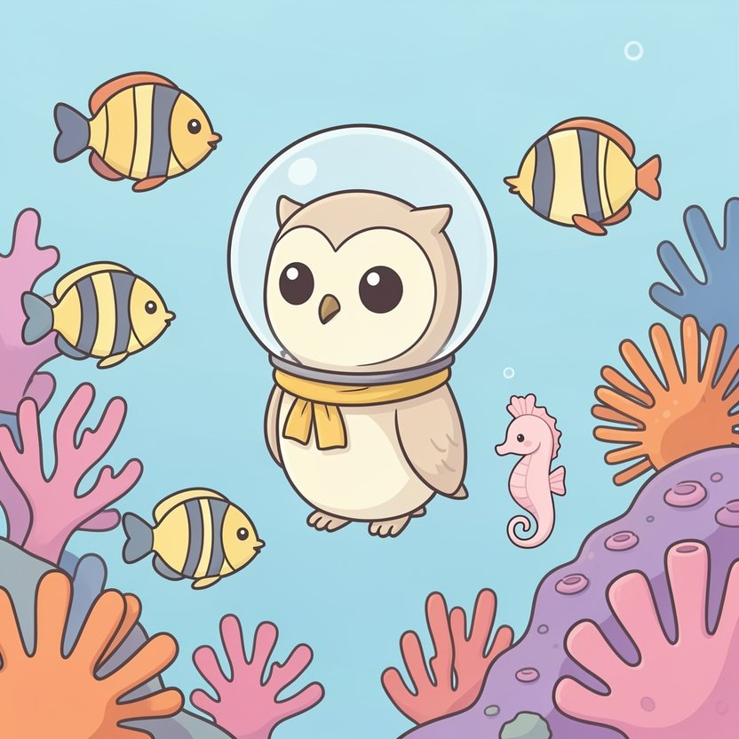

Titistoire › Les Étoiles (3-6 ans)
Plume et le récif tout gris
Une histoire de Plume la chouette pour parler de : prendre soin de la nature.

▶ Écouter et regarder l'histoire
Gratuit, sans inscription : la voix lit, le texte suit mot à mot, les images tournent comme dans un album.
Le texte de l'histoire
Chaque été, Plume enfile son petit casque de verre et plonge retrouver ses amis du récif des Mille-Bulles. De tous les endroits du monde, c'est le plus coloré.
On y trouve des coraux roses, des anémones orange qui ondulent, des poissons rayés comme des bonbons. Et Perle l'hippocampe, toute menue, qui lui sert de guide.
Mais cet été, quand Plume arrive, quelque chose cloche. Elle cherche, elle plisse les yeux. Et pourquoi ce coin-là est-il si pâle ? Soudain elle comprend : il manque des couleurs.
Tout un coin du récif est devenu gris, terne comme de la cendre. Entre les coraux traînent des choses qui ne poussent pas dans la mer. Une bouteille. Une boîte de conserve. Un vieux soulier.
« Ça dégringole d'en haut, soupire Perle. Tous les jours un peu plus. Les poissons-clowns ont déménagé avec leurs baluchons. Et l'anémone ne s'ouvre plus. »
Un sac flotte entre deux eaux, tout gonflé, comme une méduse. Mais ce n'est pas une méduse. Une petite tortue s'approche, gourmande, et ouvre déjà le bec pour y goûter…
« Non ! » Plume fonce et arrache le sac juste à temps. La petite tortue cligne des yeux, toute surprise. « Ça ne se mange pas ? » « Oh non. Pas du tout. »
Plume regarde le sac au bout de son aile. Puis le récif. Il y en a partout, à perte de vue. Des centaines.
« Il faut tout enlever ! » décide-t-elle, les ailes grandes ouvertes. Les poissons se regardent, puis reculent. « Tout ? Mais c'est impossible. On est trop petits. Et il y en a trop. »
Même Octave, le poulpe à lunettes, secoue la tête. « J'ai essayé, avec mes huit bras. Le lendemain, il en retombait tout autant. À quoi bon ? » soupire-t-il.
Plume ne trouve rien à répondre. C'est vrai qu'elle est petite. C'est vrai qu'il y en a trop. Songeuse, elle regarde la boîte de conserve, là, à ses pieds.
Alors elle la ramasse et la glisse dans son filet. « Voilà, annonce-t-elle tranquillement. Il y en a une de moins. »
Elle en ramasse une autre. Puis une autre. Toute la matinée, sans se décourager, elle remplit son filet sous l'œil des poissons. « Elle n'y arrivera jamais », chuchotent-ils derrière leurs nageoires.
À midi, Plume a nettoyé un coin grand comme une assiette. C'est tout petit, une assiette. Mais au beau milieu, un corail a retrouvé un peu de rose aux joues.
Perle s'approche. Minuscule comme elle est, elle ne peut porter qu'un bouchon. Elle le porte quand même, vaillamment. « Deux de moins », déclare-t-elle.
La petite tortue vient prêter main-forte. Puis un crabe, qui trimballe les boîtes sur son dos. Puis deux, puis dix. « Bon, bougonne Octave en attrapant une bouteille. Huit bras qui ne font rien, c'est du gâchis. »
Les poissons font la chaîne, de nageoire en nageoire. Les crevettes trient. Les crabes portent. Même la vieille murène, qui n'aime personne, sort de son trou pour pousser un soulier du bout du nez.
Plus personne ne soupire « on est trop petits ». On n'a pas le temps. On compte, pinces en l'air : « Cent de moins ! Deux cents de moins ! »
Le soir, Plume remonte à la surface en traînant son filet plein à craquer. Sur la plage, un gros morse en maillot rayé termine son pique-nique. Le voilà qui lève sa bouteille vide, prêt à la lancer dans les vagues.
Plume ne crie pas. Elle pose le filet devant lui, et elle raconte. La tortue. L'anémone. Le corail gris. Le morse baisse les yeux sur sa bouteille. Ses grosses joues deviennent toutes rouges.
« Je ne savais pas que ça allait quelque part », bredouille-t-il, tout penaud. Et il la remporte chez lui. Le lendemain, sur la plage, quelqu'un a installé une grande poubelle. Avec un poisson dessiné dessus.
L'été suivant, quand Plume enfile son casque et plonge, son cœur bat un peu trop vite. Et si tout était redevenu gris ? Tout en bas, Perle et Octave l'attendent déjà.
Mais le récif des Mille-Bulles a retrouvé ses roses, ses orange, ses rayures de bonbon. Les poissons-clowns ont réemménagé. Et l'anémone s'épanouit en grand, comme pour dire bonjour.
Il retombe encore une bouteille, de temps en temps. Alors le premier qui l'aperçoit file la ramasser. « Une de moins ! » chantonne-t-il. C'est devenu la devise du récif.